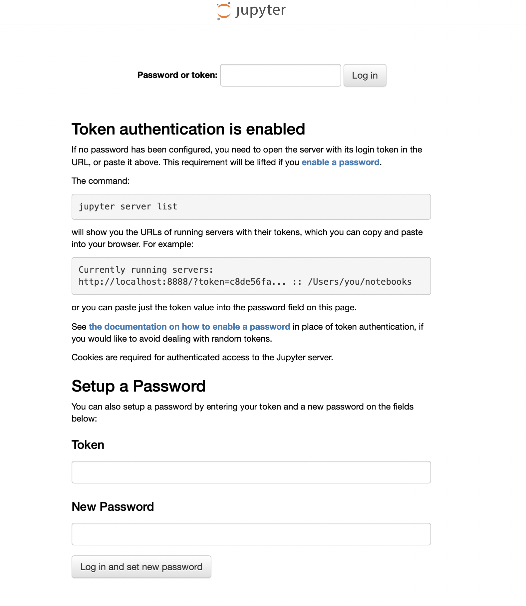
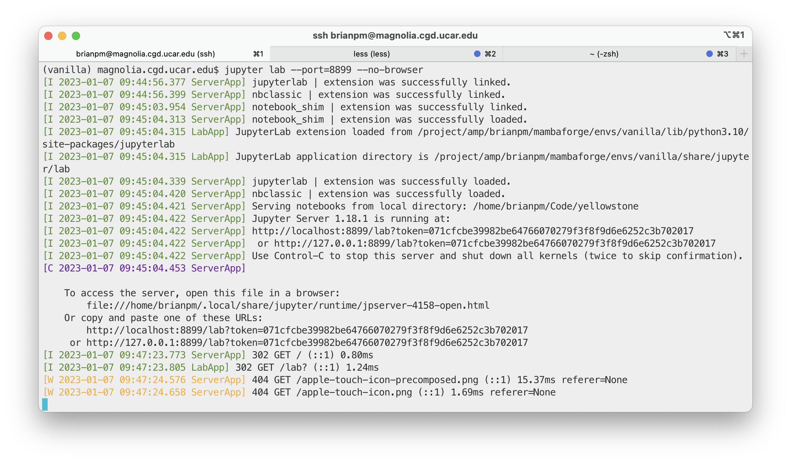

How to run JupyterLab on a CGD server and access it from a local browser via an SSH tunnel.
jupyterlab installed.ssh yourusername@cgdservername.cgd.ucar.edu
conda activate your_environment
cd /your/code/repository
jupyter lab --port=8899 --no-browserssh -N -f -L 8899:localhost:8899 yourusername@cgdservername.cgd.ucar.eduNavigate to:
localhost:8899You will likely see an authentication page asking for a token:

Go back to Terminal 1 (where the Jupyter server is running) to find the token. The output will look something like this:

Copy the token and paste it into the browser field. JupyterLab will open. Leave both terminal sessions running while you work.
In JupyterLab, use File > Shut Down to stop the server, or press Ctrl+C in Terminal 1 and confirm when prompted.
To close the SSH tunnel, run the following in any local terminal:
ps aux | grep 8899
kill -9 [PID]